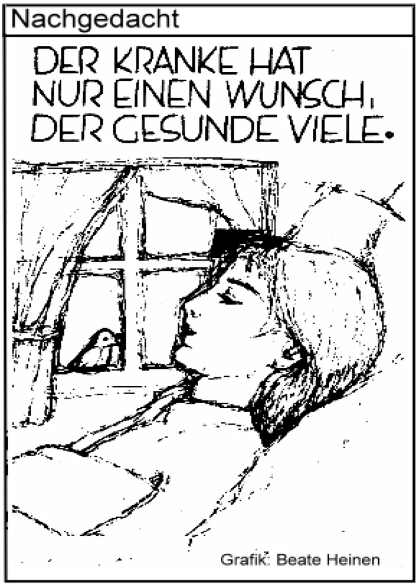
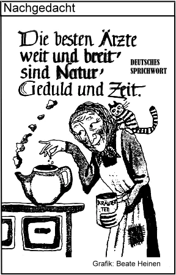

Vorwort
Liebe Leserin, lieber Leser,
seit meiner Jugend versuche ich von der Natur zu lernen, die Pflanzenheilkunde zu erforschen und bewährte Heilmittel in meiner Praxis zu erproben. Eine schöne und wertvolle Aufgabe sehe ich nun darin, Ihnen mein Wissen und meine langjährigen, praktischen Erfahrungen in diesem Buch zu vermitteln. Nach Einschätzung der Weltgesundheitsorganisation (WHO) könnten rund ¼ aller ärztlich therapierten Beschwerden durch Selbstbehandlung mit natürlichen Mitteln kuriert werden. Solch eigenverantwortliches Gesundheitsbemühen hätte zugleich - gerade in der heutigen Zeit - eine willkommene Nebenwirkung, kerngesunde Krankenkassen.
Keine Frage: Naturheilmittel, vor allem pflanzliche Arzneimittel, sind im Kommen. Immer mehr Menschen setzen auf die grüne Medizin, die in der Regel zwar langsamer, dafür aber nebenwirkungsärmer und anhaltender wirkt. Das Informationsbedürfnis kranker Menschen ist sehr groß. Sie wollen kompetent über die möglichen Ursachen ihrer Erkrankung, die Symptome, den Krankheitsverlauf und insbesondere über die Möglichkeit der Heilung aufgeklärt werden.
Der Weise tief bekümmert spricht:
An guten Mitteln fehlt es nicht, zu heilen jeden Leids Gewalt, doch kennen müsste man sie halt. (Eugen Roth).
Möge mein Buch mit dazu beitragen.
Ihr Willi Vogt.

Hinweis
Das vorliegende Buch verstehe ich als Hilfe zur Selbsthilfe mit dem Ziel, die körpereigenen Abwehrkräfte zu stärken. Es wurde mit größter Sorgfalt und nach bestem Wissen und Gewissen erstellt. Dennoch erfolgen alle Angaben ohne Gewähr und bieten keinen Ersatz für eine sachkundige, medizinische Beratung. Es ersetzt in keiner Weise eine eingehende Untersuchung oder entsprechende Behandlung durch den Arzt. Weder Autor noch Verlag können für eventuelle Misserfolge, Nachteile oder Schäden, die aus den vorliegenden Informationen, Angaben, Anregungen und Ratschlägen resultieren, eine Haftung übernehmen.
Alle aufgeführten Anwendungen haben in erster Linie vorbeugenden und lindernden Charakter. Beim Versagen dieser Maßnahmen sollten Sie sofort medizinische Hilfe in Anspruch nehmen, damit keine wertvolle Zeit verloren geht.
Prinzipiell gilt: Überschätzen Sie Ihre diagnostischen Fähigkeiten nicht. Bei unklaren Beschwerden muss vorab eine exakte Diagnosefindung durch den Arzt erfolgen.
Jede Dosierung bzw. Einnahme von Medikamenten sowie die Anwendung der aufgeführten Therapien erfolgt grundsätzlich auf eigene Gefahr.
Ärzte und Heilpraktiker können Ihnen Hilfe geben. Verantwortung für Ihren Körper müssen Sie jedoch selbst übernehmen.
Nichts ist wertvoller als die Gesundheit, mein Buch soll helfen, sie zu erhalten.

Dieses Buch ist wie folgt gegliedert:
ALLGEMEIN: Allgemeine Information zum Krankheitsbild: Hinweise zur Anatomie und Physiologie.
URSACHEN: Mögliche Ursachen können unterschiedlicher Natur sein und auch bei anderen Erkrankungen auftreten. Arzt befragen.
SYMPTOME: Mögliche Symptome: Da diese Beschwerden teilweise auch bei anderen Erkrankungen auftreten können, ist hier eine ärztliche Klärung notwendig.
ERNÄHRUNG: Hier sind alle Nahrungsmittel aufgeführt, die bei den entsprechenden Erkrankungen positive Wirkungen zeigen.
MEIDEN: Diese Nahrungsmittel sollten Sie meiden bzw. stark reduzieren, da sie den Krankheitsverlauf negativ beeinflussen oder sogar verschlimmern können.
GETRÄNKE: Wasser, Tees, Säfte.
BÄDER: Bäder und Zusätze.
THERAPIE: Mittel und Maßnahmen aus naturheilkundlicher Sicht.
MEDIKAMENTE: Die hier aufgeführten Mittel haben sich in meiner Praxis bewährt und sind in der Apotheke erhältlich. Weitere Medikamente erfragen Sie bitte bei Ihrem Arzt/Heilpraktiker. Hinweis: Wie alle Arzneimittel sollten auch homöopathische Mittel während der Schwangerschaft und Stillzeit nur nach Rücksprache mit Ihrem Arzt/Heilpraktiker angewendet werden. Bei der Anwendung dieser Arzneimittel können sich vorhandene Beschwerden vorübergehend verschlimmern (Erstverschlimmerung). In diesem Fall sollten Sie das Arzneimittel absetzen und Ihren Arzt oder Heilpraktiker befragen.
Zu Risiken und Nebenwirkungen lesen Sie die Packungsbeilage
oder fragen Sie Ihren Arzt oder Apotheker.
Abkürzungen:
| kg | Kilogramm |
| g | Gramm |
| IE | internationale Einheit |
| mg | Milligramm |
| µg | Mikrogramm |
| ng | Nanogramm |
| ml | Milliliter |